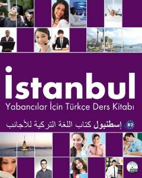

İYChet elliklar uchun B2 darajasidagi turk tili darsligi.
Ushbu darslik chet elliklar uchun turk tilini B2 darajasida o'rgatish maqsadida Istanbul Universiteti Dil Merkezi mutaxassislari tomonidan tuzilgan. Kitob o'qish, tinglash, yozish va gapirish ko'nikmalarini rivojlantiruvchi 6 ta qiziqarli birlikdan iborat.